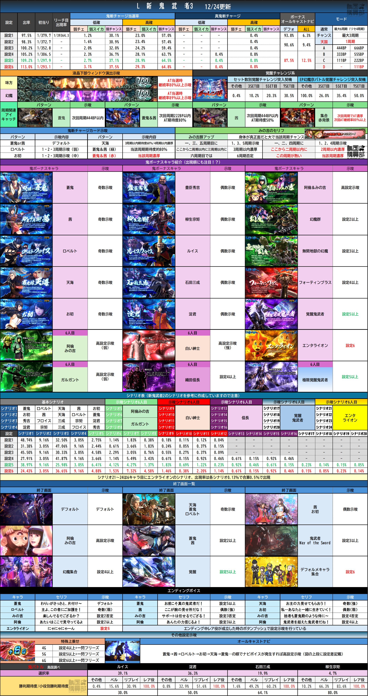

〇簡単まとめ
バッサリポイント333pt以下の振分けをメインに判別していく。
5,6周期まで引っ張られる展開が続くなら低設定を疑う。
①バッサリポイント振分け
333pt以下の振り分けに低設定~設定6で27.4%~57.1%の設定差。ここをメインに判別していく。
※2周期目以降かつ前回555ptを除く
333ptの振分け
低設定：27.4% / 設定6：57.1%
444pt以上の振分け
低設定：72.6% / 設定6：42.9%
②周期別当選率
1周期
低設定：29.4% / 設定6：35.3%
5,6周期
低設定：29.6% / 設定6：10.1%
高設定ほど早い周期で当選しやすく、5,6周期まで引っ張られにくい
③共通ベル（上段ベル）
設定1
1/34.4
設定6
1/27.4
※Xでの噂情報。解析値ではないため参考程度に。一応カウント推奨。
④直撃確率
確認出来たら期待。解析値不明のため、参考に新鬼2の解析値を記載。
設定1
1/40,857
設定2
1/15,321
設定6
1/5,107
⑤AT確率
設定1~3と4~6で大きな差がある。
設定4~6はAT性能にも設定差がある。
⑥AT終了画面
出現率が低いため使いづらさがある。
特定設定以上の示唆は注目。
⑦鬼ボーナス中のキャラ紹介
使えるレベルではなさそう。
特定設定以上の示唆あり。
一覧
